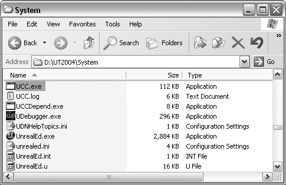

UnrealScript For Beginners/Chapter 1
| Navigation | ||
| Introduction | Table of Contents | [Chapter 2 - Remembering Stuff]? |
Chapter 1 – A Running Start
Introducing UnrealScript
What is UnrealScript?
UnrealScript is a programming language that greatly resembles the Java programming language. For those of you who have been living in a cave the past few years, Java is a popular web programming language, created by Sun Microsystems, that allows a high degree of interactivity between the user and the website. UnrealScript is designed to bring the flexibility and simplicity of the Java programming language to allow game developers a greater degree of freedom in modifying the Unreal Engine. With UnrealScript, the Unreal Engine can be easily modified to cater to a wide assortment of game genres, including (but not limited to): first person shooters, real time strategy games, role-playing games and sports games.
Why UnrealScript?
UnrealScript offers many advantages over the traditional C/C++ game modification paradigm. Some highlights of UnrealScript’s strength include:
- Operating system independence – UnrealScript code can be used interchangeably between different operating systems, as long as the operating system is supported by the Unreal Engine.
- Simplicity – UnrealScript allows programmers to quickly and easily modify game mechanics without having to worry about complex game engine topics such as physics, audio programming, networking, and rendering.
Setting Up for UnrealScript
If you do not already have UT2004 (Unreal Tournament 2004) installed, now is a good time to do so. Instructions for installing UT2004 can be found in Appendix A. From here on, it is assumed that UT2004 is installed and that it is updated to the latest patch (build 3369 at the time of this writing).
The Compiler, a.k.a. UCC make
Before we delve any deeper, you must understand what a compiler is and how it fits into the grand scheme of things. So what is a compiler? A compiler is a program that translates a human readable programming language into a format that a computer can more easily understand. A compiler also acts to enforce programming language rules, and will spit out error messages if your program does not abide by such rules. Often times, these errors are just simple mistakes that are easily fixed, but sometimes these errors may serve as a warning to you that there may be a greater problem which could adversely affect how your program behaves. A more in-depth discussion on compiler error messages may be found later in this chapter.
Once you have completed writing your program, you then would invoke the compiler to translate your program into a computer-understandable format. If the compiler should give you any error messages, you would then go back and fix the errors until the compiler accepts your program and does the compiling. When the compiler has finished compiling, you would then be able to run your program.
The (only known) compiler for UnrealScript is a small program called UCC.exe. The program can be found in the \System folder of your Unreal Engine directory, as shown in Figure 1.1.
|  |
| Figure 1.1. UCC.exe resides in the \System folder in the Unreal Engine directory. |
Note
UCC.exe is not the actual program that does the compiling. Instead, this job is given to a sub-program called make. To invoke the make program, you would first call UCC.exe and then give make as the parameter. In MS-DOS (and later in Windows Command Prompt) this command can be simplified as just UCC make. In the future this compiler will be referred to as UCC make.
A Nurturing Environment
As with any programming language, a development environment must be set up in order for programmers to effectively create, debug, and run their programs. Typically, a development environment involves some form of a text editor and a compiler. In more advanced development environments however, the text editor and compiler are packaged together as a single solution. Such solutions are called Integrated Development Environments, or IDEs. Of the many development environments that are available for UnrealScript, the two flavors that seem most popular with veteran UnrealScript programmers include “Text + UCC make” and UDE v3005 (Unreal Development Environment). The relative advantages and disadvantages of each development environment are presented in the Table 1.1.
| Notepad + UCC make | UDE v3005 | |
| Pros | Running Notepad is simple and quick. | All-in-one development environment. Includes debugging functionality. |
| Cons | Requires the use of command-line utilities and/or batch files. | Large memory footprint. Some weaker computers will not be able to run both the IDE and UT2004 concurrently. |
| Table 1.1. The pros and cons of each development environment. | ||
Since there are numerous development environments available for UnrealScript, it is impractical to accommodate every possible development environment out there. Therefore, this book is designed so that the examples should work with most development environments without the need for any modification (although it is recommended that you understand the nuances of your specific development environment before you continue any further).
Project 1: Your First Program
UnrealScript Program Anatomy
Summary
Comments
Wormbo: I suggest changing "running MS-DOS" to something else. It's a real 32bit Windows application under Windows 2k/XP. Also it may be worth mentioning the combination of UnCodeX + UMake + user's favorite Text Editor as an alternative to UDE (which actually is a special edition of WOTgreal).
Jimboh: Thanks. And good point, MS-DOS is way too archaic to be mentioning. So I generalized that into command-line utilities. As for UnCodeX, admitedly, I have never used the program before. The description says it's just a source package analyzer, but judging from the screenshots, it looks like more of an IDE? Also reorganizing the Development Environment section
Wormbo: UnCodeX is an excellent source code browser, i.e. a tool you really need if you don't use an IDE.